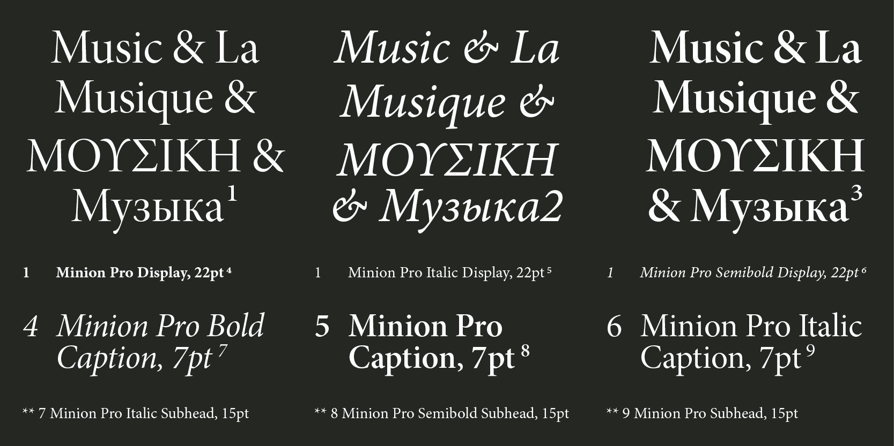
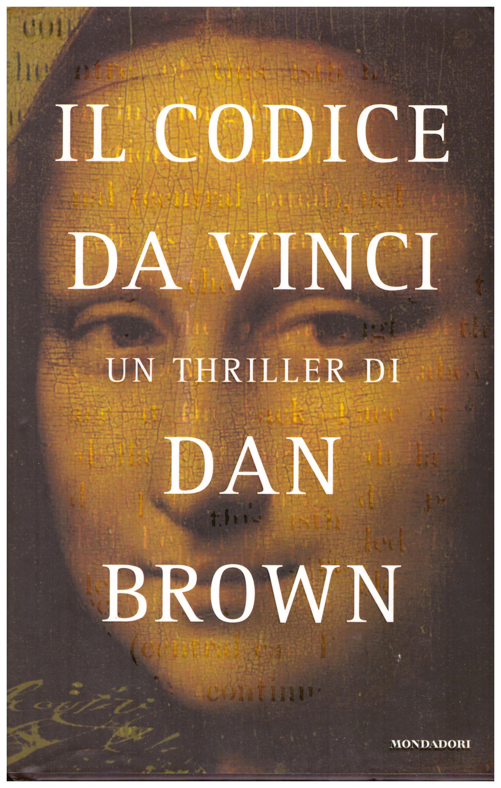
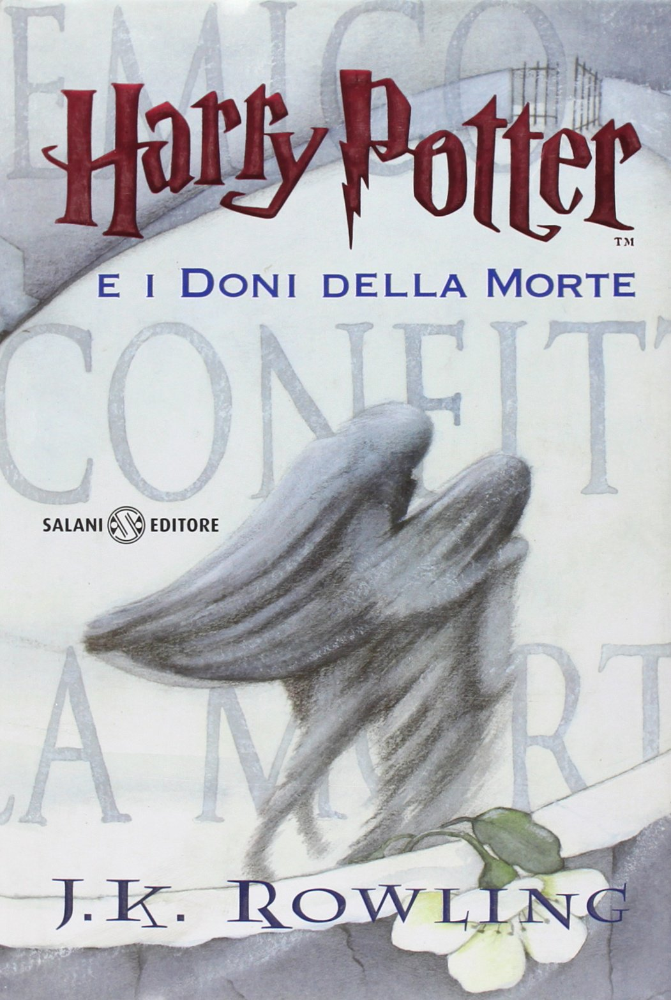

Adobe Type è una rinomata e innovativa fonderia tipografica fondata da Adobe Systems. È conosciuta per la sua vasta collezione di caratteri di alta qualità. I designer di Adobe Type sono maestri nel design tipografico e si dedicano all'eccellenza in ogni carattere che creano.
La fonderia offre una vasta gamma di caratteri che spaziano dai classici senza tempo alle creazioni moderne e audaci. Ogni font di Adobe Type è stato attentamente progettato per garantire leggibilità e un impatto visivo notevole in diversi contesti.
Minion Pro è un carattere tipografico Adobe Original progettato da Robert Slimbach. La prima versione di Minion è stata rilasciata nel 1990.

Minion Pro è un carattere tipografico ispirato ai caratteri classici e vecchio stile del Rinascimento tardo. Combina l'eleganza e la bellezza dei caratteri di quel periodo con l'alta leggibilità necessaria per il testo. Minion Pro utilizza la tecnologia digitale OpenType per offrire flessibilità e controllo tipografico senza precedenti.
La famiglia di caratteri include diverse varianti di spessore, larghezza e dimensioni ottiche, oltre al supporto per molte lingue occidentali. Con numerose legature, maiuscole, cifre vecchio stile, swash e altri glifi, Minion Pro è adatto per una vasta gamma di utilizzi, tra cui libri, newsletter e packaging.
Dove viene utilizzato Minion Pro?
Il carattere tipografico Minion Pro è ampiamente utilizzato per i testi di libri, sia di narrativa che saggi, grazie alla sua leggibilità e al suo aspetto classico. È stato adottato anche per loghi e identità aziendali, poiché comunica affidabilità e stile. Viene impiegato per creare inviti eleganti e cartoline personalizzate, aggiungendo raffinatezza e stile.
Nel settore del packaging di prodotti di lusso, come profumi e cosmetici, Minion Pro è scelto per il suo aspetto sofisticato che comunica qualità e valore. Inoltre, viene utilizzato per campagne pubblicitarie di banche, compagnie assicurative e istituzioni finanziarie, comunicando fiducia e professionalità.

